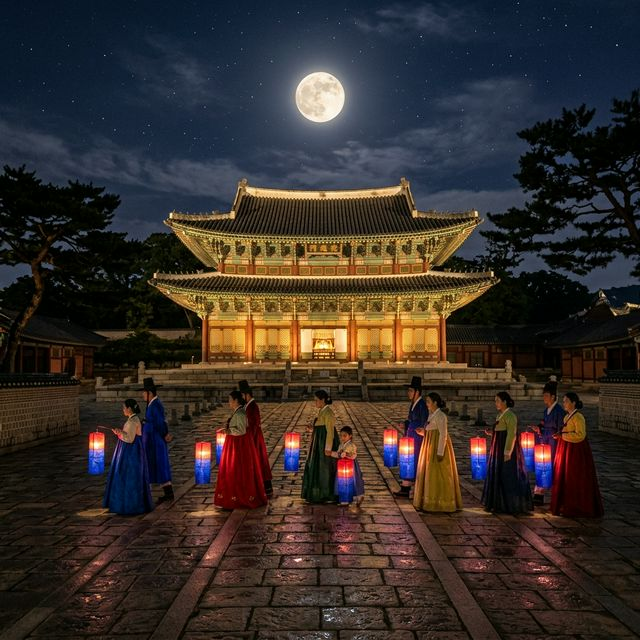
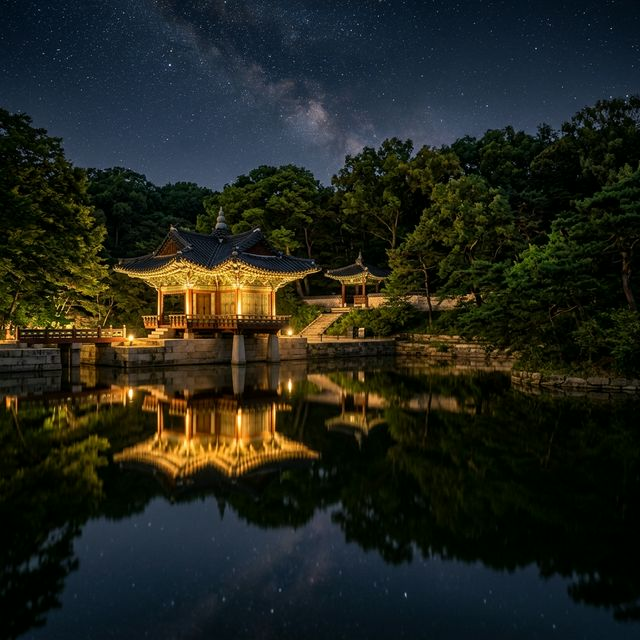
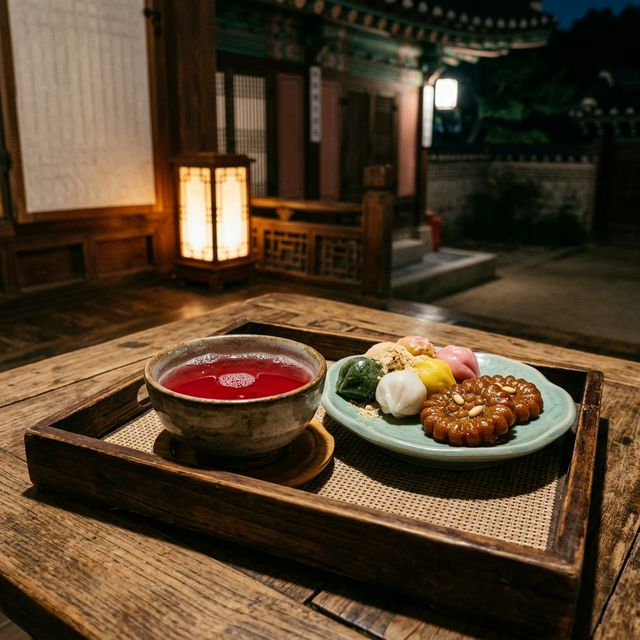

창덕궁 달빛기행 2026 야간 관람 왕이 거닐던 밤의 정원 예매 전략 및 관람 포인트
달빛을 품은 조선의 궁궐, 그 은밀한 밤의 문이 열립니다! 2026년 봄, 서울의 가장 아름다운 법궁인 창덕궁이 야간 관객들을 위해 특별한 시간을 마련했습니다. '창덕궁
달빛기행'은 은은한 조명 아래 전문 해설사의 목소리를 들으며 후원을 산책하고, 왕실의 다도와 전통 공연을 즐기는 한국 최고의 고품격 야간 문화 프로그램인데요. 예매 전쟁이라는 말이 무색하지 않을 만큼
뜨거운 인기를 자랑하는 이 행사의 2026년 상반기 일정과 핵심 관람 팁을 지금 바로 전해드립니다.
1. 2026 창덕궁 달빛기행 상반기 일정 및 관람 안내
올해 '2026 창덕궁 달빛기행'의 상반기 일정은 2026년 4월 16일(목)부터 5월 31일(일)까지 매주 목, 금, 토, 일요일 주 4일제로 운영됩니다. 관람 시간은
1부(오후 7시 20분)와 2부(오후 8시)로 나뉘어 있으며, 한 회차당 약 100분 내외의 정교하게 설계된 탐방 코스가 진행됩니다. 야간에는 후원 입장이 엄격히 제한되는 만큼, 이번 달빛기행은
창덕궁의 속살을 밤에 합법적으로 엿볼 수 있는 유일하고도 소중한 기회입니다.
인제 막 시작된 4월의 달빛기행은 꽃샘추위가 물러가고 밤바람이 가장 선선한 시기에 진행되어 인기가 어느 때보다 높습니다. 창덕궁 정문인 돈화문이 아닌 금호문을 통해 조용히 입장하는 순간부터 관람객들은
마치 600년 전 조선 시대로 타임슬립 한 듯한 기분을 느끼게 됩니다. 안내 초롱을 손에 들고 어둠이 깔린 인정전과 낙선재를 거니는 동안 도시의 소음은 사라지고 고궁의 고요한 숨소리가 귓가를
간지럽힙니다.

은은한 달빛 아래 청사초롱을 들고 인정전 앞마당을 지나는 탐방객들 — AI 제작 이미지
2. 고도의 전략이 필요한 2026년 예매 시스템 총정리
매년 수만 명의 대기열을 기록하는 인기 행사인 만큼 2026년에는 추첨제 시스템이 더욱 정교하게 안착되었습니다. 3월 말 진행된 사전 응모 기간에 당첨된 운 좋은 분들에
이어, 현재는 취소분이나 잔여석에 대한 일반 예매가 티켓링크를 통해 수시로 열리고 있습니다. 1인당 관람료는 30,000원이며, 암표 거래 방지를 위해 예매자 본인의 신분증 확인이 매우 철저하게
이루어지므로 양도받은 티켓으로는 절대 입장이 불가능하다는 점을 명심하셔야 합니다.
예매에 실패하신 분들을 위한 꿀팁은 방문 희망일 전날 밤 12시나 당일 오전을 공략하는 것입니다. 개인 사정으로 취소되는 표들이 간헐적으로 풀리기 때문에 끈기를 가지고
새로고침을 하다 보면 기적 같은 예매 성공의 주인공이 될 수 있습니다. 만 65세 이상 어르신이나 장애인, 국가유공자분들을 위한 전화 예매 및 현장 할인 제도도 별도로 마련되어 있으니, 대상자라면 증빙
서류를 지참하여 혜택을 받으시기 바랍니다.
3. 달빛기행의 하이라이트: 부용지와 애련정의 야경 반영
창덕궁 달빛기행의 수많은 명소 중 모든 이들이 손꼽는 최고의 장소는 단연 부용지입니다. 네모난 연못 가운데 둥근 섬이 있고 그 주위를 부용정과 주합루가 감싸고 있는 이곳은
낮에도 아름답지만, 조명이 켜진 밤의 모습은 압권입니다. 특히 바람 없는 맑은 날 수면에 거꾸로 비친 전각의 모습은 마치 거울 속 세상을 보는 듯한 신비로움을 자아냅니다. 이곳에서 머무는 약 10분의
시간은 달빛기행 전체 일정 중 가장 황홀한 순간입니다.
부용지를 지나면 불로문(不老門)을 통과해 애련정에 도착하게 됩니다. 늙지 않는 문을 지나 마주하는 아담한 정자 애련정은 정조 임금의 효심과 철학이 깃든 장소입니다. 전문
해설사가 들려주는 궁궐 안의 비하인드 스토리는 교과서에서 보던 평면적인 역사를 입체적인 서사로 바꾸어 놓습니다. 밤의 정원은 시야가 좁아지는 대신 청각과 후각이 예민해지기 때문에, 숲에서 나는 나무
향기와 연못의 물비린내까지도 축제의 일부가 됩니다.

수면에 비친 전각의 반영이 절경을 이루는 부용지의 야경 — AI 제작 이미지
4. 연경당에서 즐기는 왕실의 다도와 전통 공연 체험
탐방 코스의 후반부인 연경당(演慶堂)에 도착하면 잠시 다리를 쉬어가며 왕실의 대접을 받는 호사를 누릴 수 있습니다. 조선 시대 양반가의 저택을 모티브로 지어진 이곳
대청마루에서 관람객들은 따뜻한 전통차와 정성스럽게 빚은 다과를 제공받습니다. 은은한 차의 향기가 입안을 가득 채우는 가운데 바로 눈앞에서 펼쳐지는 거문고 독주나 판소리 한 마당은 달빛기행의 품격을
완성하는 핵심적인 시간입니다.
2026년 주제 공연은 '달빛 아래 속삭임'을 테마로 하여, 더욱 섬세하고 서정적인 한국 무용이 추가되었습니다. 조명 하나에 의지해 춤을 추는 무희의 자태는 배경이 된
고풍스러운 한옥과 어우러져 한 폭의 움직이는 동양화를 보는 듯합니다. 약 15분간 진행되는 공연 시간 동안은 모든 관객이 숨을 죽이고 오직 소리와 동작에만 집중하며, 이는 복잡한 현대 사회에서 느끼기
힘든 깊은 정적의 미학을 일깨워줍니다.
5. 상량정에서 듣는 감미로운 대금 소리와 달맞이
낙선재 뒤편 언덕에 위치한 상량정(上凉亭)은 평소 일반 관람객의 출입이 금지된 비공개 구역입니다. 하지만 달빛기행 관람객들에게는 이 은밀한 팔각정이 기꺼이 개방됩니다.
상량정은 이름 그대로 '시원함을 더하는 정자'라는 뜻을 가지고 있으며, 이곳에 서면 남산타워를 비롯한 서울 도심의 현대적 야경과 궁궐의 전통적 야경이 교차하는 기묘하고 매력적인 풍경을 감상할 수
있습니다.
이곳에서의 감상 포인트는 어디선가 들려오는 애절한 대금 소리입니다. 보이지 않는 곳에서 연주되는 대금의 가락은 밤바람을 타고 산책로 전체에 울려 퍼지며 관람객들의 감수성을
극대화합니다. 보름달이 뜨는 시기와 겹친다면 기와지붕 사이로 솟아오른 달을 보며 소원을 비는 '달맞이 행사'도 함께 진행됩니다. 왕들이 그랬듯, 기와 능선 끝에 걸린 달을 바라보며 깊은 사유에 잠겨보는
것은 달빛기행이 주는 최고의 선물입니다.
6. 전문 해설사와 함께하는 입체적인 역사 스토리텔링
창덕궁 달빛기행이 단순한 야간 개방과 다른 점은 전문 해설사가 20명 내외의 소그룹을 전담하여 안내한다는 것입니다. 해설사들은 단순히 건축물의 제원을 나열하는 것이
아니라, 인정전에서 치러졌던 국왕의 즉식식 풍경이나 낙선재에 얽힌 덕혜옹주의 슬픈 사연 등 각 장소에 숨겨진 인간적인 이야기들을 풍성하게 들려줍니다. 무선 수신기를 통해 흘러나오는 명품 해설은
100분의 탐방 시간을 마치 10분처럼 느껴지게 만듭니다.
2026년에는 외국인 관광객을 위한 글로벌 회차도 대폭 확대되었습니다. 영어, 중국어, 일본어 전용 해설사가 배치되는 날이 지정되어 있어, 한국을 방문한 외국 친구들에게
우리의 전통 문화를 가장 수준 높게 소개할 수 있는 기회를 제공합니다. 우리에게도 다소 낯선 궁궐의 용어들을 알기 쉽게 풀어 설명해 주므로, 역사에 조예가 깊지 않은 분들이라도 누구나 흥미진진하게 조선
왕실의 삶 속으로 녹아들 수 있습니다.

연경당에서 공연과 함께 제공되는 정갈한 왕실 다과 상차림 — AI 제작 이미지
7. 관람 전 반드시 챙겨야 할 필수 준비물과 드레스코드
즐거운 야간 산책을 위해 드레스코드와 준비물 체크는 필수입니다. 창덕궁 후원은 평지보다는 언덕과 굽이진 길이 많으며, 야간에는 시야가 제한되기에 반드시 '굽이 낮고 편안한
운동화'를 착용해야 합니다. 구두나 슬리퍼는 발목 부상의 위험이 있고 덱 길에서 소음이 커 관람 흐름을 방해할 수 있습니다. 또한, 4~5월의 궁궐 밤 공기는 예상보다 훨씬 쌀쌀하므로 가벼운 경량
패딩이나 머플러를 여분으로 챙겨 체온 유지에 신경 써야 합니다.
사진 촬영에 진심인 분들이라면 삼각대 사용 금지 규정을 꼭 숙지하세요. 행차의 흐름을 방해하고 타 관람객의 시야를 가리는 삼각대나 셀카봉은 일절 사용할 수 없습니다. 대신
최근 스마트폰의 야간 모드 성능이 비약적으로 발전했으므로, 숨을 죽이고 벽이나 나무에 살짝 기대어 촬영하는 것만으로도 충분히 아름다운 야경 사진을 건질 수 있습니다. 카메라 셔터 소리는 가급적 무음으로
설정하여 고궁의 정적을 지켜주는 센스를 발휘해 주세요.
8. 교통 및 본인 확인 절차: 헛걸음하지 않는 법
창덕궁은 주차 공간이 극히 부족하므로 대중교통 이용이 강제됩니다. 안국역(3호선)이나 종로3가역(1, 3, 5호선)에서 도보로 10~15분 내외면 도착할 수 있으며, 버스
노선도 매우 다양합니다. 만약 부득이하게 차량을 이용한다면 인근 현대계동사옥 유료 주차장이나 정독도서관 주차장을 이용해야 하지만, 주말 저녁에는 이마저도 쉽지 않습니다. 가능한 지하철을 활용하여 여유
있게 도착하는 것이 예매한 소중한 자리를 지키는 최선의 방법입니다.
입장 시 철저한 본인 확인 절차를 거친다는 점을 다시 한번 강조합니다. 예매 번호만으로는 입장이 불가능하며, 주민등록증, 운전면허증, 혹은 여권 등 사진이 부착된 실물
신분증이 반드시 필요합니다. 동반 1인은 예매자와 함께 입장해야 하며, 신분증 미지참 시 예매가 취소되고 환불도 불가능하므로 출발 전 가방 속에 신분증이 있는지 반드시 확인하시기 바랍니다. 금호문 앞
대기 장소에는 20분 전까지 도착하는 것이 원활한 관람 시작을 위해 좋습니다.
9. 달빛기행 후의 감동을 이어가는 주변 야경 명소 추천
100분간의 달빛기행이 끝난 뒤의 여운을 이어가고 싶다면 인근 서순라길이나 종묘 담장길 산책을 추천합니다. 창덕궁 담장을 따라 조성된 서순라길은 최근 감각적인 카페와
바들이 속속 들어서며 밤 산책의 성지로 떠오르고 있습니다. 고즈넉한 담벼락을 조명 삼아 걷다 보면 달빛기행에서 느꼈던 고전적인 아름다움과는 또 다른 세련된 밤의 정취를 만끽할 수 있습니다. 가벼운 수제
맥주 한 잔과 함께 고궁에서의 특별한 밤을 정리하기에 이보다 좋은 곳은 없습니다.
또한, 창덕궁에서 도보 15분 거리인 익선동 한옥마을 역시 야간 관람 후 들르기 좋은 코스입니다. 좁은 골목길 사이사이로 비치는 따스한 조명들은 궁궐에서의 장엄한 야경과는
대조되는 아기자기한 매력을 선사합니다. 달빛기행은 단순한 관람을 넘어 서울이라는 도시의 역사적 층위를 피부로 체감하는 경험입니다. 2026년의 봄, 달빛 아래에서 왕의 길을 걸어보며 여러분만의 특별한
로맨틱 케미스트리를 완성해 보시길 바랍니다.
#창덕궁달빛기행
#2026창덕궁달빛기행
#서울야간가볼만한곳
#창덕궁야간기행
#부용지야경
#연경당공연
#궁궐야간개장
#창덕궁후원야간
#커플데이트코스
#서울봄여행추천